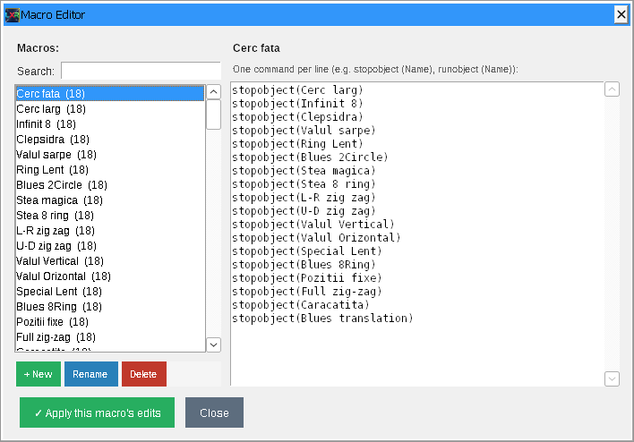
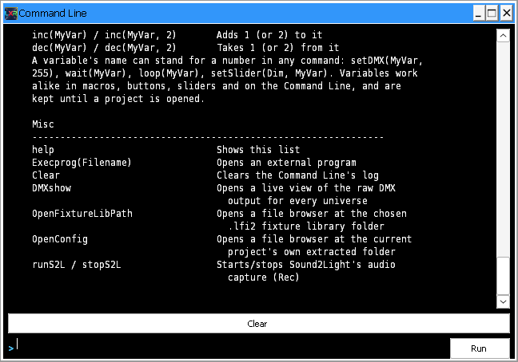

For: FullPlayer
Commands do by text what the buttons and the faders do by hand: start and stop buttons, set channels, sliders and modes, open windows. A macro is a named list of commands, one per line. Every command works the same wherever it is written; all of them are in Commands.
| Where | When it runs |
|---|---|
| A button's On Start / On Stop (Object Propertys) | When the button starts / stops. One command, or the name of a macro. |
| A slider's On Change, On Mouse Down, On Mouse Up Command (Sliders) | When the slider moves, is pressed, is let go. The slider's name in the command stands for its value. |
| A macro (the Macro Editor) | When something runs it by its name: a button, a slider, another macro, the
Command Line. Its lines run one after another; wait, loop and endloop work only
here. |
| The Command Line | At once, when you press Enter or Run. |
A macro's name written alone, without runObject(...) round it, runs that macro - many projects write
their On Start this way. In Andrei_edit the button Cerc fata has Cerc fata as its On
Start: its macro stops the other movements, so only one runs at a time.

The macros of Andrei_edit; the macro Cerc fata is open: one
stopobject for each other movement.
Macros on the function bar (or the command Macro) opens it. On the left the
macros of the project, each with the number of its commands, and Search to show only those
whose name has the text typed. A warning sign in front of a name: no button or slider has that name, and no start, stop or
slider command uses it. On the right the commands of the macro chosen, one per line.
The macros are written into the project's file at the next Save (or Save as...); until then the status line says Macro changes kept (pending Save As). While the Macro Editor is open, the keys of the buttons do nothing, so that typing does not start the light.
U(1)
loop(4)
SetDMX(33, 255)
wait(250)
SetDMX(33, 0)
wait(250)
endloop
setchmode(33, out)On universe 1, channel 33 goes to full and back to 0 four times - SetDMX holds it by hand (MAN) -,
then setchmode gives it back to the buttons (OUT). A button stopped while its On Start macro still waits
drops the rest of the macro, then runs its On Stop. A macro that runs on and on without a
wait (a loop with no wait) is stopped by the program.

The Command Line after help: the end of the list.
Command Line on the function bar (or showCmd) opens it. Type a command after
> and press Enter or Run. The window writes the commands run - yours, and
those of the buttons and sliders - with the program's answers and errors; Clear (or the
command Clear) empties it. help prints the list of the commands (the page Commands).